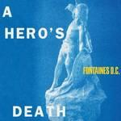
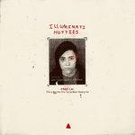
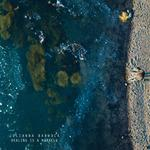

Music Reviews
-
Kllo Maybe We Could
While there are some appealing songs here, the Melbourne duo struggle to stand out next to subpar material.
Joe Marvilli checks in... -

Fontaines D.C. A Hero's Death
On A Hero's Death, the Dublin quintet looks a little more inward—assessing where they stand as rising up-and-comers and having the impulse to express themselves differently.
Juan Edgardo Rodríguez reviews... -

Neon Trees I Can Feel You Forgetting Me
After a six-year absence, I Can Feel You Forgetting Me is an adequate continuation of what made Neon Trees so appealing in the first place—even if it isn’t an entertaining or interesting enough comeback.
Ethan Gordon reviews... -

Lori McKenna The Balladeer
On her eleventh studio LP, the country singer-songwriter writes stories that feel like they could stem from your family—a little messy and frustrating, but also, a little hopeful and caring.
Ethan Gordon reviews... -

illuminati hotties Free I.H: This Is Not the One You've Been Waiting For
Sarah Tudzin frees herself from a nebulous label agreement on her latest self-described "mixtape," letting loose on a number of scattershot musical ideas with no set course.
Juan Edgardo Rodríguez reviews... -
Lianne La Havas Lianne La Havas
The singer-songwriter chronicles a relationship that's blooming and decaying in equal time. featuring her exquisite voice, ear for soulful textures, and solid songwriting.
Ethan Gordon reviews... -
Nadine Shah Kitchen Sink
Nadine Shah's swaps global politics for domesticity on her fourth album—but finds just as much conflict.
Matthew Smith reviews... -

My Morning Jacket The Waterfall II
The veteran Southern rockers' sequel to its 2015 predecessor, released five years later, feels like revisiting a specific time that has long past—even if this collection of scrapped odds and ends is top-notch.
Juan Edgardo Rodríguez reviews... -

NZCA Lines Pure Luxury
The Michael Lovett-led project has waded in the waters of disco before, but the latest, entitled Pure Luxury, is that style of writing on steroids.
Ethan Gordon reviews.... -

Julianna Barwick Healing is a Miracle
Healing is a Miracle is an entrancing album from start to finish, and will be a gratifying listen for both long-time Barwick fans and newcomers to her music alike.
Emma Bauchner review...